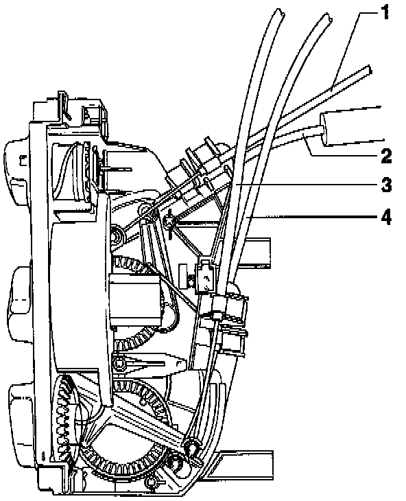

Without A/C

1 Main shut-off flap cable
- Connects blower control knob to main shut-off flap
- Black sleeve
- Length: 807 mm (31.8 in.)
2 Temperature flap cable
- Connects temperature control knob to temperature flap
- Blue sleeve
- Length: 585 mm (23.0 in.)
3 Footwell/defroster flap cable
- Connects air flow distribution knob (upper control lever) to footwell/defroster flap
- Black sleeve
- Length: 488 mm (19.2 in.)
4 Central flap cable
- Connects air flow distribution knob (lower control lever) to central flap
- Black sleeve
- Length: 639 mm (25.2 in.)